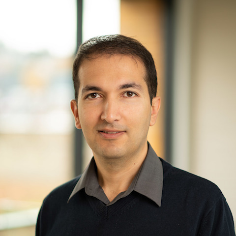

Senior Tech Lead
Meta · Fundamental AI Research (FAIR) · Robotics
roozbehm [at( gmail.com


Leading research on Embodied AI, focusing on building AI systems that can perceive, reason, and interact with the physical world.
Meta · Fundamental AI Research (FAIR) · Robotics
roozbehm [at( gmail.com
Leading research on Embodied AI, focusing on building AI systems that can perceive, reason, and interact with the physical world.